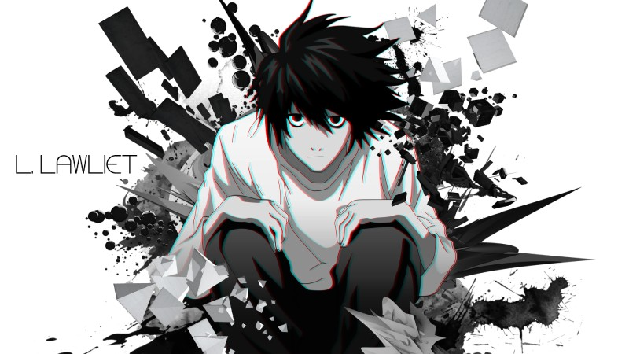

Las siguientes teorías fueron creadas por apasionados fanáticos de Death Note que han explorado diversos aspectos de la serie y han formulado ideas interesantes. Estas teorías ofrecen una perspectiva única y creativa sobre el mundo de Death Note y sus personajes. ¡Sumérgete en estas intrigantes teorías y descubre un nuevo nivel de profundidad en la historia de Light, L, Ryuk y otros personajes icónicos!
Esta teoría sugiere que el genio detective L nunca murió realmente en la serie, a pesar de las apariencias. Se argumenta que L fingió su propia muerte como parte de un plan para exponer a Kira (Light). Si bien carece de pruebas concretas en la trama, esta teoría se basa en la personalidad y habilidades engañosas de L.
Algunos fanáticos sostienen que Misa Amane, una ferviente adoradora de Kira, no se suicidó como se sugiere al final de la serie. En cambio, creen que podría haber llevado a cabo un plan elaborado para desaparecer de la vista de Kira y continuar su apoyo en la clandestinidad.
Una teoría interesante sugiere que después de su muerte, Light Yagami se convirtió en un shinigami, en lugar de enfrentar algún castigo después de morir. Esto se basa en la idea de que Light ya no estaba destinado para el mundo de los humanos.
Una teoría más amplia explora la noción de que todos los shinigamis en la serie alguna vez fueron humanos. La teoría argumenta que aquellos que usaron el Death Note se convirtieron en shinigamis después de la muerte. Si bien esto no se confirma en la serie, plantea preguntas interesantes sobre la naturaleza de los shinigamis y sus orígenes.